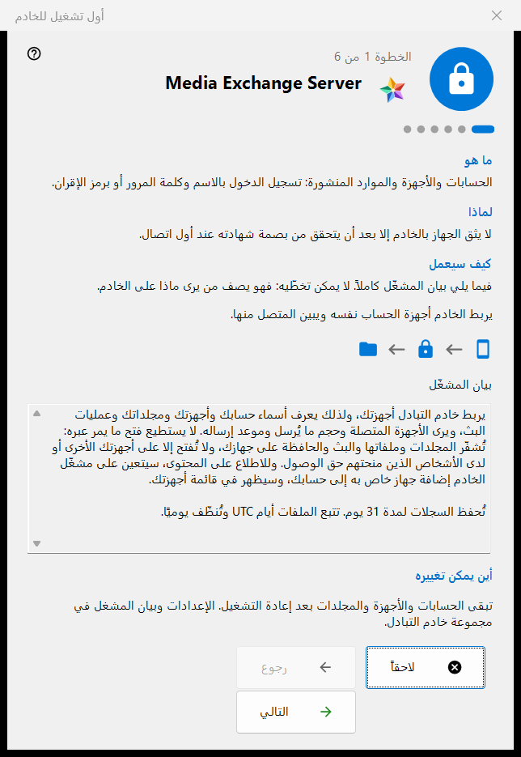
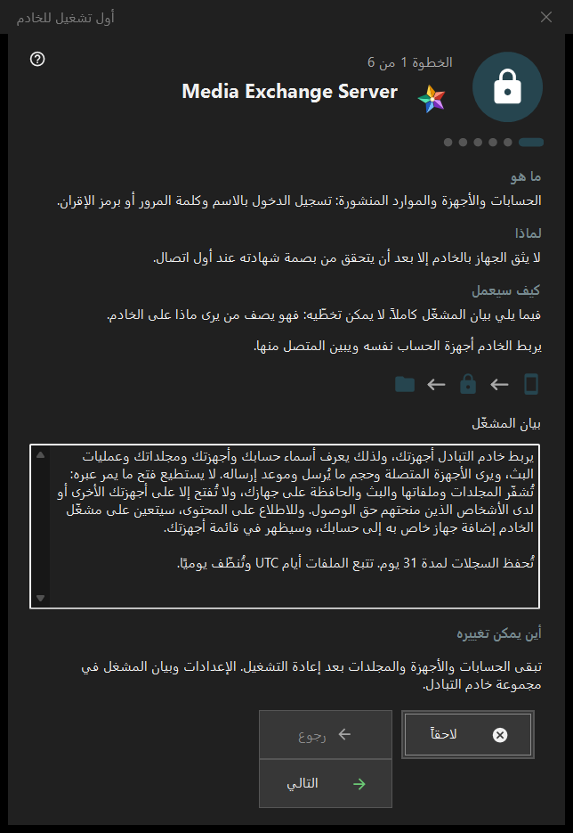

أول تشغيل للخادم
الغرض من هذه النافذة
دليل التشغيل الأول لمجموعة خادم التبادل في Share Manager. يشرح ما الذي سيصبحه هذا الكمبيوتر، ويعرض بيان المشغّل، ويضبط المنافذ وعنوان العملاء والحساب الأول، وينتهي عند حالة الخادم. لا يظهر إلا عند وجود خادم التبادل وتفعيله.


بهذا الترتيب
- اقرأ بيان المشغّل في الصفحة الأولى.
- راجع المنافذ وقاعدة جدار الحماية.
- في إصدار الخادم الذي لا توجد فيه خدمة، قرّر بشأن خدمة Windows.
- املأ العنوان الذي يستخدمه العملاء.
- أنشئ الحساب الأول.
- تحقّق من بصمة الشهادة ثم اضغط إنهاء.
عناصر النافذة
الصفحات والأزرار
يعرض التذييل الخطوة N من M؛ وتعمل الأزرار رجوع والتالي ولاحقاً كما في أي معالج، ويفتح الزر إنهاء في الصفحة الأخيرة مجموعة خادم التبادل في المدير. يمكن تخطي أي صفحة دون تغييرات: عندئذٍ يبقى الخادم متوقفاً أو على حاله.
بيان المشغّل
البيان الكامل لمن يرى ماذا على الخادم. لا يمكن تخطيه. يربط الخادم أجهزة حساب واحد ويُبلغ أيّها متصل.
المنافذ وجدار الحماية
منفذ لقاء للأجهزة ونطاق منافذ للعملاء الخارجيين. يجب أن تعرف الأجهزة منفذ الخادم، لذلك لا تسري التغييرات إلا على الرموز الجديدة. قاعدة جدار الحماية تخص البرنامج نفسه، فلا يحتاج تغيير المنفذ إلى قاعدة جديدة. توجد هذه القيم في مجموعة خادم التبادل.
خدمة Windows
تظهر فقط في إصدار الخادم الذي لا توجد فيه الخدمة بعد. تُبقي الخدمة الخادم متاحاً حين لا يكون أحد مسجّلاً الدخول. خانة الاختيار تحفظ موافقتك فقط: تُسجَّل الخدمة بعد إنشاء الحساب الأول، مع طلب رفع صلاحيات واحد، ولا يُثبَّت شيء قبل ذلك. الأمر تسجيل كخدمة.. في مجموعة التبادل يفعل الشيء نفسه لاحقاً.
العنوان الذي يستخدمه العملاء
العنوان الذي يستخدمه العملاء (المضيف:المنفذ): هو ما تستخدمه الأجهزة الأخرى للوصول إلى هذا الكمبيوتر. الزر اقتراح عنوان محلي يملأ الحقل فقط عند الضغط عليه. العنوان الفارغ يُبقي التشغيل الأول المحلي البحت صالحاً، لكنه يُخفي البث والاتصالات بالمجلدات عن الأجهزة الأخرى.
الحساب الأول
الحساب الذي يسجّل به الجهاز الأول الدخول. اختر إنشاء كلمة مرور أو أدخل كلمة مرورك؛ والخيار ربط هذا الكمبيوتر بالحساب يضمّ هذا الكمبيوتر إليه. الزر التالي ينشئ الحساب ويشغّل الخادم ويفحص الشهادة. تُعرض كلمة المرور مرة واحدة في النافذة المعتادة ولا تُخزَّن على هذا الكمبيوتر. وإذا حدث إخفاق بعد إنشاء الحساب فلا يُحذف الحساب.
الخادم جاهز
تذكر الصفحة الأخيرة أين سُجّل العنوان واسم المستخدم وبصمة الشهادة، وتعرض الزرين نسخ البصمة وسلسلة الاتصال ورمز QR.. ويثق الجهاز بالخادم بعد أن يتحقق من البصمة عند أول اتصال. الرابطان ربط هاتف (مساعدة) ونشر المجلد الأول (مساعدة) يفتحان صفحتي المساعدة المناسبتين.